Llevar un diario tiene beneficios conocidos —ordenar ideas, reducir el estrés, conservar recuerdos—, pero la mayoría de las personas lo abandona pronto. Al analizar por qué, aparecen tres obstáculos concretos:
Huellas ataca cada obstáculo con el hardware del dispositivo:
| Problema | Solución en Huellas |
|---|---|
| Escribir es lento | Dictado por voz: el micrófono captura el audio y se transcribe a texto en español; el usuario solo habla y revisa. |
| Se pierde el contexto | Cámara y galería (hasta 4 fotos por entrada) y GPS automático al guardar. Cada recuerdo aparece en un mapa interactivo y puede abrirse en Google Maps. |
| Privacidad | Todo se guarda solo en el dispositivo (SQLite) y la app puede protegerse con huella, rostro o PIN. La ubicación es opcional por entrada. |
| Registro del estado de ánimo | Selector de ánimo (😄 🙂 😐 😢 😫) que da color a cada entrada y en el mapa. |
Público objetivo: estudiantes y adultos jóvenes que quieren llevar un diario personal o de viaje sin invertir mucho tiempo, y personas con dificultades para teclear (el dictado mejora la accesibilidad).
lib/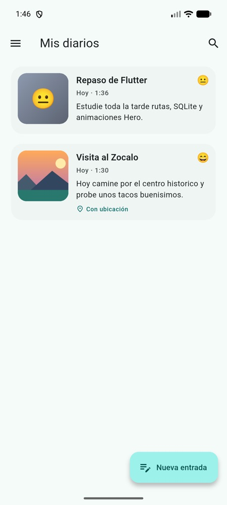
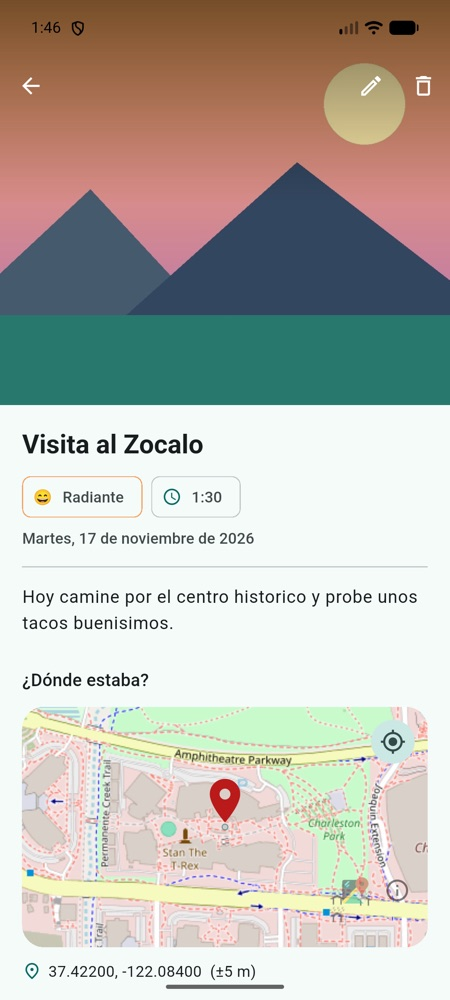
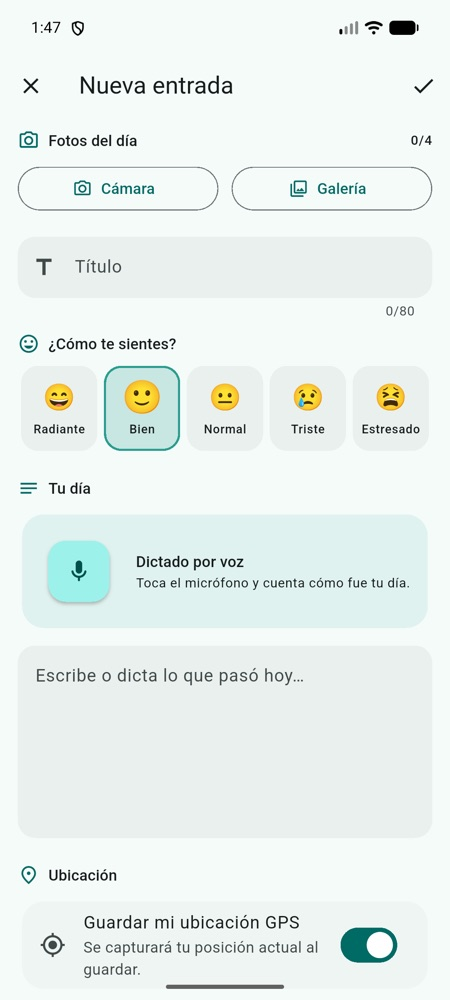
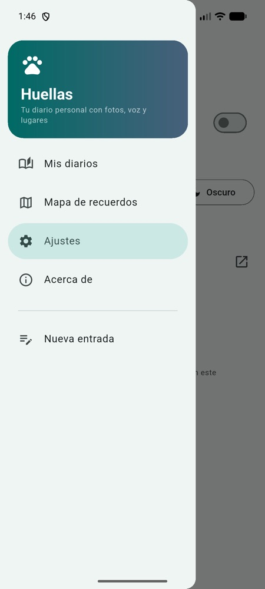
| Requerimiento | Implementación | Dónde está en el código |
|---|---|---|
| Scaffold, AppBar y Drawer | Todas las pantallas usan Scaffold + AppBar. Las secciones principales (Mis diarios, Mapa,
Ajustes, Acerca de) comparten un Drawer que resalta la sección actual. |
presentation/widgets/app_drawer.dart |
| Routes y Navigator (lista, detalle, formulario) | 8 rutas con nombre generadas en onGenerateRoute, que valida los argumentos y muestra una pantalla
"no encontrada" en vez de fallar. |
presentation/routes/app_routes.dart, app_router.dart |
| Transiciones con Hero | La miniatura de la lista "vuela" a la cabecera del detalle, y de ahí al visor a pantalla completa. Además: transiciones de desvanecido y deslizamiento, animación escalonada de la lista y micro-animaciones. | entry_card.dart, entry_detail_screen.dart, page_transitions.dart |
| SQLite para registros y metadatos (rutas de imágenes, coordenadas) | Tabla diary_entries con image_paths (arreglo JSON) y latitude/longitude/location_accuracy
(REAL). SharedPreferences solo para preferencias (tema y bloqueo). |
data/datasources/diary_database.dart, data/models/diary_entry_model.dart |
| try-catch y FutureBuilder | Cada adaptador traduce errores técnicos a AppException con mensaje en español. Lista, detalle, mapa,
búsqueda y ajustes cargan con FutureBuilder (estados de carga, error con "Reintentar" y vacío). |
core/errors/app_exception.dart, sqlite_diary_repository.dart, pantallas |
| Cámara y galería | image_picker; permiso de cámara con permission_handler; galería con el selector del sistema
(sin permiso). Las fotos se copian al directorio privado de la app. |
image_picker_media_service.dart, local_image_storage_service.dart |
| Audio y dictado | speech_to_text captura el audio del micrófono y lo transcribe en español; medidor de nivel de audio en vivo. |
speech_to_text_service.dart, dictation_button.dart |
| GPS y mapas | geolocator captura la posición al guardar (tiempo límite de 15 s y respaldo). En el detalle, mapa
interactivo (flutter_map + OpenStreetMap) y botón que abre Google Maps (url_launcher). |
geolocator_location_service.dart, location_map.dart, url_maps_launcher.dart |
| Login biométrico (rúbrica) | local_auth: pantalla de bloqueo opcional al abrir la app, con huella, rostro o PIN de respaldo. |
lock_screen.dart, local_auth_biometric_service.dart |
| SOLID, capas, comentarios, commits | Arquitectura limpia en 4 capas (sección 3), comentarios en español y 12+ commits descriptivos. | git log |
| Criterio | Evidencia de nivel "Sobresaliente" |
|---|---|
| 1. Integración de hardware (35 pts) | Cámara, galería, micrófono, GPS y biometría integrados en el mismo flujo. Cada permiso tiene tres caminos probados en el emulador: concedido; negado (aviso con SnackBar); bloqueado de forma permanente (diálogo con "Abrir ajustes"). El GPS muestra una capa de progreso y, si está apagado, ofrece activarlo o guardar sin ubicación. Ninguna falla de hardware cierra la app. |
| 2. UI, navegación y animaciones (30 pts) | Scaffold, Drawer y rutas con nombre. Pila de navegación limpia: el Drawer usa pushNamedAndRemoveUntil
para que la pila sea siempre [Inicio, Sección]. El Drawer resalta la sección actual. Hero, transiciones personalizadas y animaciones en lista, botones y selector de ánimo. |
| 3. Persistencia, asincronía y errores (35 pts) | SQLite con esquema versionado, serialización Map/JSON probada (incluidos datos corruptos), FutureBuilder
con CircularProgressIndicator, try-catch en cada capa y manejadores globales de errores. Las fotos se copian a almacenamiento
permanente, así que sobreviven a reinicios (verificado con un arranque en frío). |
El proyecto sigue una arquitectura limpia (Clean Architecture) con dependencias que siempre apuntan hacia el dominio. El dominio no importa Flutter, SQLite ni ningún plugin: solo define qué necesita la app mediante interfaces. La capa de datos implementa cómo hacerlo, y la presentación consume las interfaces.
lib/ ├── main.dart, app.dart ← arranque, manejadores globales de error, MaterialApp ├── core/ di/ errors/ theme/ utils/ ├── domain/ entities/ repositories/ services/ usecases/ (sin Flutter) ├── data/ datasources/ models/ repositories/ services/ (SQLite + plugins) └── presentation/ controllers/ routes/ screens/ widgets/
| Principio | Aplicación concreta en Huellas |
|---|---|
| S — Responsabilidad única | DiaryLocalDataSource solo ejecuta SQL; SqliteDiaryRepository convierte modelos y traduce errores;
SaveDiaryEntry coordina fotos y registro; EntryFormController contiene la lógica del formulario;
las pantallas solo dibujan. AppFeedback centraliza cómo se muestran los errores. |
| O — Abierto/Cerrado | Para cambiar SQLite por un backend en la nube basta con crear otra clase que implemente DiaryRepository
y registrarla en AppDependencies; ninguna pantalla cambia. AppException es una jerarquía sealed:
un nuevo tipo de error se agrega como subclase. |
| L — Sustitución de Liskov | En las pruebas, InMemoryDiaryRepository sustituye a SqliteDiaryRepository y la app funciona igual.
Todas las implementaciones respetan el contrato documentado (p. ej. lanzar StorageException). |
| I — Segregación de interfaces | En lugar de un "HardwareService" gigante hay interfaces pequeñas: MediaService, SpeechService,
LocationService, BiometricAuthService, PermissionService, MapsLauncher,
ImageStorageService. Cada cliente depende solo de lo que usa. |
| D — Inversión de dependencias | La presentación y los casos de uso dependen de abstracciones del dominio. Las clases concretas se crean en un único
lugar (AppDependencies.create()) y se entregan por medio del InheritedWidget AppScope. |
classDiagram
direction LR
class DiaryEntryModel {
+int? id
+String mood
+List~String~ imagePaths
+double? latitude
+double? longitude
+toMap() Map
+fromMap(map)$
+toJson() Map
+fromJson(json)$
+toEntity() DiaryEntry
+fromEntity(entry)$
}
class DiaryEntry {
+int? id
+String title
+String content
+Mood mood
+DateTime createdAt
+DateTime updatedAt
+List~String~ imagePaths
+GeoLocation? location
+copyWith() DiaryEntry
}
class GeoLocation {
+double latitude
+double longitude
+double? accuracyMeters
}
class Mood {
<<enumeration>>
great
good
neutral
sad
stressed
}
DiaryEntryModel ..> DiaryEntry : convierte
DiaryEntry *-- GeoLocation
DiaryEntry --> Mood
classDiagram
direction LR
class SaveDiaryEntry {
+call(draft) Future~DiaryEntry~
}
class DeleteDiaryEntry {
+call(entry) Future
}
class DiaryRepository {
<<interface>>
+getAll()
+getById(id)
+search(query)
+create(entry)
+update(entry)
+delete(id)
+count()
}
class ImageStorageService {
<<interface>>
+persist(path)
+delete(path)
+toStoredPath(path)
+toAbsolutePath(path)
}
class SqliteDiaryRepository {
-_guard(operation, action)
}
class DiaryLocalDataSource {
+findAll()
+findById(id)
+search(query)
+insert(model)
+update(model)
+delete(id)
}
class DiaryDatabase {
+database Future~Database~
-_onCreate()
-_onUpgrade()
}
class LocalImageStorageService
SaveDiaryEntry --> DiaryRepository
SaveDiaryEntry --> ImageStorageService
DeleteDiaryEntry --> DiaryRepository
DeleteDiaryEntry --> ImageStorageService
DiaryRepository <|.. SqliteDiaryRepository
ImageStorageService <|.. LocalImageStorageService
SqliteDiaryRepository --> DiaryLocalDataSource
SqliteDiaryRepository --> ImageStorageService
DiaryLocalDataSource --> DiaryDatabase
classDiagram
direction TB
class MediaService {
<<interface>>
+pickPhoto(source)
+recoverLostPhotos()
}
class SpeechService {
<<interface>>
+startListening(onResult, onSoundLevel, onStopped, onError)
+stopListening()
+cancel()
}
class LocationService {
<<interface>>
+getCurrentLocation()
+openLocationSettings()
}
class BiometricAuthService {
<<interface>>
+isAvailable()
+authenticate(reason)
}
class PermissionService {
<<interface>>
+request(permission)
+openAppSettings()
}
class MapsLauncher {
<<interface>>
+openLocation(location)
}
class ImagePickerMediaService
class SpeechToTextService
class GeolocatorLocationService
class LocalAuthBiometricService
class HandlerPermissionService
class UrlMapsLauncher
MediaService <|.. ImagePickerMediaService
SpeechService <|.. SpeechToTextService
LocationService <|.. GeolocatorLocationService
BiometricAuthService <|.. LocalAuthBiometricService
PermissionService <|.. HandlerPermissionService
MapsLauncher <|.. UrlMapsLauncher
ImagePickerMediaService --> PermissionService : cámara
SpeechToTextService --> PermissionService : micrófono
classDiagram
direction LR
class AppDependencies {
+DiaryRepository diaryRepository
+MediaService mediaService
+SpeechService speechService
+LocationService locationService
+BiometricAuthService biometricAuthService
+SaveDiaryEntry saveDiaryEntry
+create()$ Future~AppDependencies~
}
class AppScope {
<<InheritedWidget>>
+of(context)$ AppDependencies
}
class EntryFormController {
<<ChangeNotifier>>
+addPhoto(source)
+toggleDictation()
+captureLocation()
+save(location)
+FormStatus status
}
class SettingsController {
<<ChangeNotifier>>
+setThemePreference()
+setBiometricLockEnabled()
}
class AppRouter {
+onGenerateRoute(settings)$
+onGenerateInitialRoutes()$
+routeObserver$
}
class RouteAwareRefresh {
<<mixin>>
+onReturnToScreen()
}
class AppException {
<<sealed>>
+String message
}
class PermissionException
class ServiceDisabledException
class StorageException
class AuthenticationException
AppScope o-- AppDependencies
EntryFormController --> AppDependencies : usa servicios
AppException <|-- PermissionException
AppException <|-- ServiceDisabledException
AppException <|-- StorageException
AppException <|-- AuthenticationException
HomeScreen ..|> RouteAwareRefresh
EntryDetailScreen ..|> RouteAwareRefresh
EntryFormScreen --> EntryFormController
AppRouter ..> HomeScreen
AppRouter ..> EntryDetailScreen
AppRouter ..> EntryFormScreen
AppScope y recibe errores tipados.
sequenceDiagram
autonumber
actor U as Usuario
participant F as EntryFormScreen
participant C as EntryFormController
participant M as MediaService
participant S as SpeechService
participant L as LocationService
participant UC as SaveDiaryEntry
participant IS as ImageStorage
participant R as DiaryRepository
participant DB as SQLite
U->>F: Toca "Cámara"
F->>C: addPhoto(camera)
C->>M: pickPhoto()
M-->>C: ruta temporal
U->>F: Toca el micrófono
F->>C: toggleDictation()
C->>S: startListening()
S-->>C: texto + nivel de audio
U->>F: Toca "Guardar"
F->>C: captureLocation()
Note over F: capa de progreso
C->>L: getCurrentLocation() 15 s
alt error de GPS o permiso
L-->>F: AppException
F->>U: diálogo con 3 opciones
else éxito
L-->>C: GeoLocation
end
F->>C: save(location)
C->>UC: call(DiaryEntryDraft)
UC->>IS: persist(foto)
IS-->>UC: ruta permanente
UC->>R: create(DiaryEntry)
R->>DB: INSERT
DB-->>R: id
R-->>F: DiaryEntry guardada
F->>U: SnackBar y vuelve a la lista
SaveDiaryEntry borra las copias de fotos (no quedan archivos huérfanos).sequenceDiagram participant H as HomeScreen participant FB as FutureBuilder participant R as SqliteDiaryRepository participant DS as DiaryLocalDataSource participant DB as SQLite H->>R: getAll() H->>FB: future FB-->>H: waiting → CircularProgressIndicator R->>DS: findAll() DS->>DB: SELECT … ORDER BY created_at DESC DB-->>DS: filas (Map) DS-->>R: DiaryEntryModel.fromMap R-->>FB: lista de DiaryEntry (rutas relativas a absolutas) FB-->>H: done → lista animada / vacío / error + "Reintentar" Note over H: Al cerrar otra pantalla, RouteObserver llama didPopNext → nueva carga
CREATE TABLE diary_entries ( id INTEGER PRIMARY KEY AUTOINCREMENT, title TEXT NOT NULL, content TEXT NOT NULL, mood TEXT NOT NULL, -- nombre del enum Mood image_paths TEXT NOT NULL DEFAULT '[]', -- arreglo JSON de rutas relativas latitude REAL, -- coordenadas GPS (opcionales) longitude REAL, location_accuracy REAL, -- precisión en metros created_at INTEGER NOT NULL, -- milisegundos desde epoch updated_at INTEGER NOT NULL ); CREATE INDEX idx_entries_created_at ON diary_entries (created_at DESC);
Ejemplo de fila real leída del emulador:
1 | Visita al Zocalo | great | ["diary_images/img_1794900617541_3220284084.jpg"] | 37.4219983 | -122.084 | 5.0
Las rutas se guardan relativas al directorio de documentos de la app porque en iOS la ruta absoluta del contenedor cambia entre actualizaciones; el repositorio las convierte a absolutas al leerlas.
flowchart LR L["/lock
LockScreen"] -- pushReplacementNamed --> H["/
HomeScreen"] H -- pushNamed + DiaryEntry --> D["/entry
EntryDetailScreen"] H -- pushNamed --> F["/entry/form
EntryFormScreen"] D -- pushNamed + DiaryEntry --> F D -- pushNamed + PhotoViewerArgs --> P["/entry/photo
PhotoViewerScreen"] H -. Drawer · pushNamedAndRemoveUntil .-> M["/map"] H -. Drawer .-> S["/settings"] H -. Drawer .-> A["/about"] M -- pushNamed --> D
| Ruta | Pantalla | Transición / detalles |
|---|---|---|
/lock | LockScreen | Desvanecido. Solo existe si el bloqueo está activo. |
/ | HomeScreen | Raíz. Drawer, búsqueda (SearchDelegate), botón flotante. |
/entry | EntryDetailScreen | FadePageRoute + Hero de la foto. Recibe un DiaryEntry. |
/entry/form | EntryFormScreen | SlideUpPageRoute (sube desde abajo). Sin argumento = crear; con DiaryEntry = editar. |
/entry/photo | PhotoViewerScreen | Ruta no opaca con Hero y zoom (InteractiveViewer). |
/map, /settings, /about | Secciones | Se abren desde el Drawer. |
pushNamedAndRemoveUntil(ruta, ModalRoute.withName('/')); la pila siempre es
[Inicio, Sección] y el botón "atrás" nunca recorre un historial infinito./ debajo de /lock si la ruta inicial es
/lock, y con "atrás" se podría entrar sin autenticarse. onGenerateInitialRoutes crea únicamente la ruta pedida
y, al autenticarse, pushReplacementNamed reemplaza el bloqueo.PopScope; si hay cambios sin guardar pregunta "¿Descartar cambios?".RouteAwareRefresh (con RouteObserver) recarga la lista y el detalle
al regresar de otra pantalla.entry-{id}-image-{n}) en lista → detalle → visor. Las entradas sin foto usan un
degradado con el emoji del ánimo, que también se anima.FutureBuilder con initialData en el detalle: la entrada se dibuja desde el primer frame, requisito para que el Hero
encuentre su destino mientras se relee de la base de datos.TweenAnimationBuilder + Interval), AnimatedSwitcher,
AnimatedContainer/AnimatedScale en el selector de ánimo, halo del micrófono que crece con el volumen.Permission.camera. Si se niega se muestra un aviso; si queda bloqueado, un diálogo con
"Abrir ajustes". Después se abre la cámara con image_picker (máx. 1920 px, calidad 85 %).LocalImageStorageService las copia a
<documentos>/diary_images/. Al editar o borrar, las fotos que se quitan se eliminan del disco.recoverLostPhotos() recupera la foto con
retrieveLostData().speech_to_text abre el micrófono, captura el audio y lo envía al reconocedor del sistema (SpeechRecognizer en
Android, SFSpeechRecognizer en iOS). Antes se piden los permisos de micrófono (y de reconocimiento de voz en iOS). Se elige
automáticamente un idioma español: primero es_MX y, si el reconocedor no lo ofrece, español latinoamericano
(es_US o es_419). La interfaz muestra:
ServiceDisabledException → diálogo "Activar ubicación".En el detalle se muestra un mapa interactivo (flutter_map + mosaicos de OpenStreetMap, sin clave de API) con marcador,
círculo de precisión y botón para centrar, además del botón "Abrir en Google Maps"
(https://www.google.com/maps/search/?api=1&query=lat,lng). La sección "Mapa de recuerdos" muestra todas las entradas.
Desde Ajustes se activa el bloqueo; para activarlo o desactivarlo hay que autenticarse primero (demuestra que el dispositivo tiene
credenciales y que quien lo cambia es el dueño). Con local_auth se permite huella o rostro, con PIN/patrón de respaldo. Cada código de error
(temporaryLockout, noCredentialsSet…) se traduce a un mensaje claro. Si el usuario quita todas las credenciales del
teléfono, la app no lo deja fuera de sus datos: explica la situación y desactiva el bloqueo.
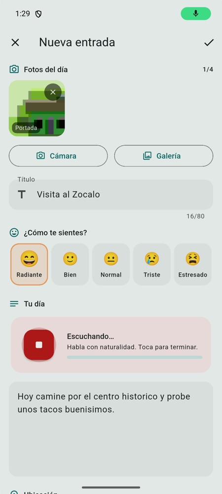
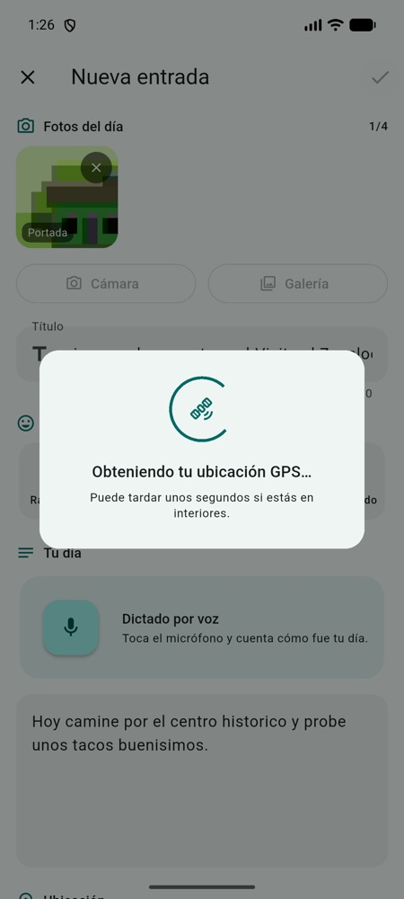
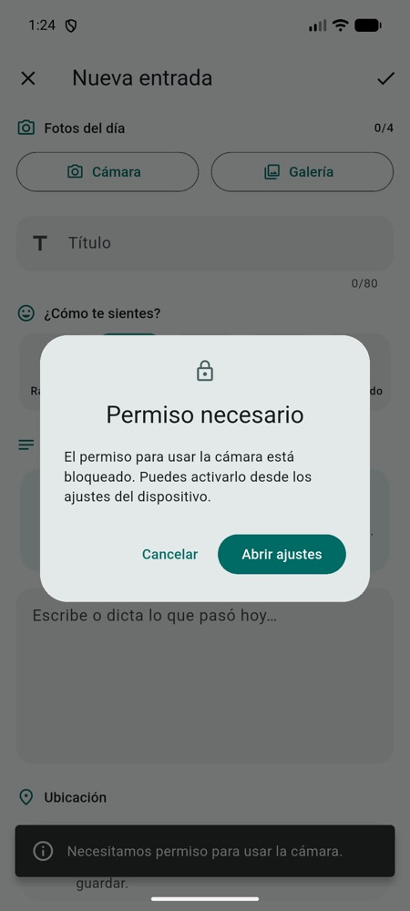
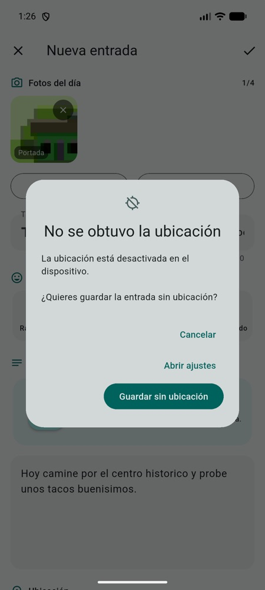
Los diarios son registros estructurados que se ordenan, buscan y actualizan: van en SQLite
(sqflite). SharedPreferences (SharedPreferencesWithCache) guarda solo dos preferencias simples:
el tema y si el bloqueo biométrico está activo. Cada dato está en el almacenamiento adecuado.
DiaryEntryModel convierte la entidad en tres formatos: toMap/fromMap (fila SQLite, con image_paths como
JSON), toJson/fromJson (fechas ISO-8601 y ubicación anidada, útil para respaldos) y toEntity/fromEntity. Si una fila
está corrupta (JSON inválido o un ánimo desconocido), se carga igualmente con valores seguros en lugar de romper toda la lista.
| Capa | Estrategia |
|---|---|
| Data | try-catch en cada adaptador; PlatformException, DatabaseException,
TimeoutException o FileSystemException se convierten en una AppException con mensaje en español.
El repositorio usa un método _guard() que además registra el error con developer.log. |
| Domain | Validaciones (ValidationException) y reversión: si el INSERT falla, se borran las fotos copiadas. |
| Presentation | FutureBuilder con tres estados (carga, error con "Reintentar", vacío). AppFeedback.showError
decide entre SnackBar o diálogo según el tipo de excepción (pattern matching sobre la clase sellada). |
| Global | FlutterError.onError y PlatformDispatcher.onError registran cualquier error no previsto. Si la app no
puede iniciarse (p. ej. sin espacio), muestra una pantalla con "Reintentar" en lugar de cerrarse. |
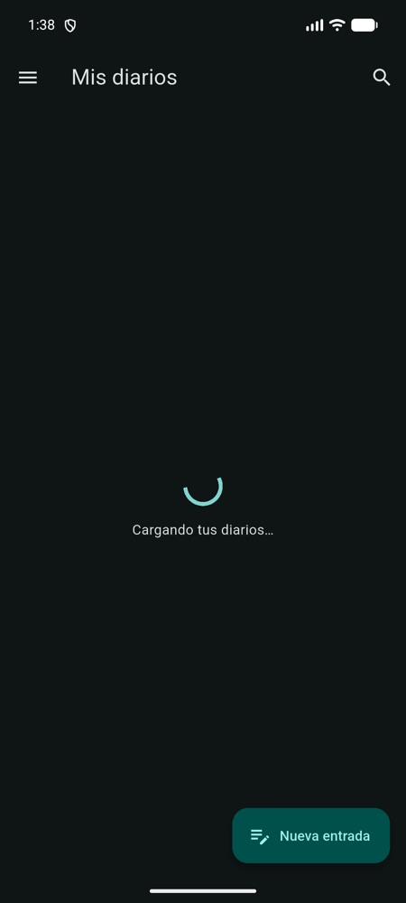
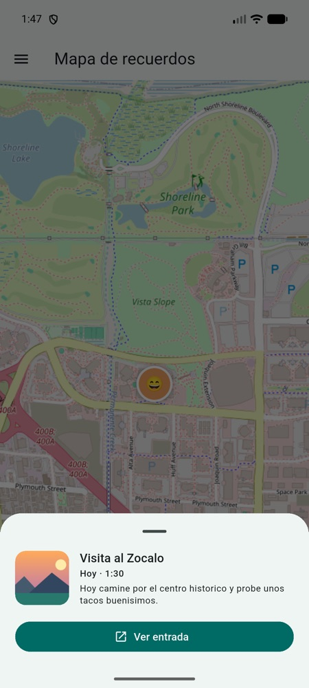
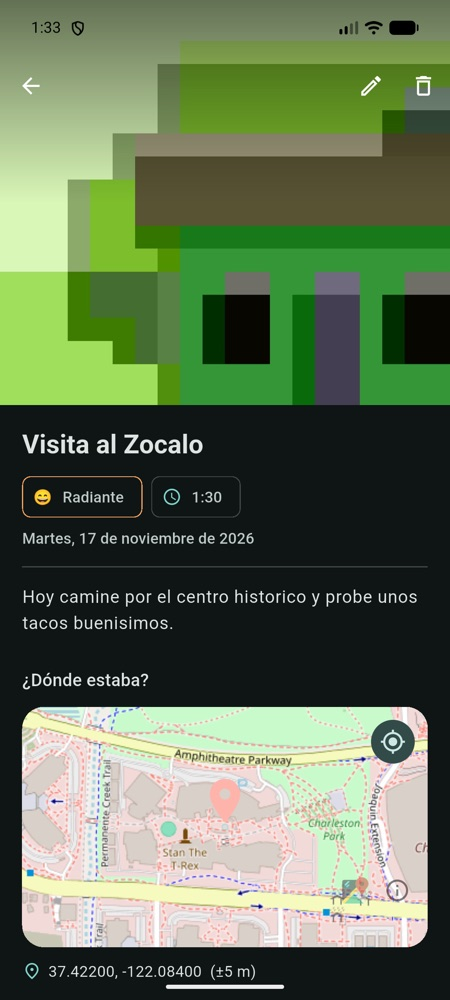
flutter test: 19/19 correctas)| Archivo | Qué verifica |
|---|---|
test/data/diary_entry_model_test.dart | Ida y vuelta Map/JSON, rutas como arreglo JSON, coordenadas, datos corruptos. |
test/data/sqlite_diary_repository_test.dart | SQLite real en memoria (sqflite_common_ffi): orden, búsqueda, actualizar, borrar, rutas relativas y GPS. |
test/domain/save_diary_entry_test.dart | Validación de título, copia de fotos, borrado de fotos quitadas y reversión ante fallos. |
test/presentation/navigation_test.dart | Carga con FutureBuilder, lista → detalle → atrás, eliminar y volver, Drawer → Ajustes → atrás. |
es-ES con indicador de micrófono activo del sistema.sqlite3).setState(() => _future = _load()). La función flecha devuelve el Future y, en modo debug, Flutter lanza una aserción.
Como ocurría dentro de didPopNext (mientras el Navigator actualiza su pila), el Navigator quedaba bloqueado: al eliminar
una entrada el detalle no se cerraba y "atrás" cerraba la app. Se corrigió usando un cuerpo de bloque en setState y difiriendo la
recarga a una microtarea. Se agregó una prueba de regresión que falla con el defecto y pasa con la corrección.flutter pub get flutter test # 19 pruebas flutter run # emulador o teléfono Android (recomendado: dispositivo físico)
Requisitos: Flutter 3.44 (Dart 3.12), Android SDK 37 para compilar (minSdk 24). Para probar la biometría en el emulador hay que registrar un PIN y una huella en Ajustes → Seguridad. El dictado y los mosaicos del mapa requieren internet; el resto funciona sin conexión.
Limitaciones y trabajo futuro: bloquear de nuevo al volver de segundo plano; cifrar la base de datos (SQLCipher); nombre del lugar (geocodificación inversa); grabar y reproducir notas de voz además de transcribirlas; respaldo/exportación del diario en JSON.
| Pregunta | Respuesta breve |
|---|---|
| ¿Por qué SQLite y no solo SharedPreferences? | Los diarios son registros con consultas (ordenar, buscar con LIKE, actualizar por id). SharedPreferences es clave-valor; se usa solo para preferencias. |
| ¿Dónde se guardan las fotos? ¿Sobreviven a un reinicio? | Se copian a documentos/diary_images y en la BD se guarda la ruta relativa como JSON. Sí: se verificó con un arranque en frío. |
| ¿Qué pasa si el usuario niega un permiso? | La primera vez se muestra un aviso; si queda bloqueado, un diálogo lleva a Ajustes. Nunca se cierra la app. |
| ¿Y si el GPS tarda o está apagado? | Capa de progreso, tiempo límite de 15 s, respaldo con la última posición conocida y opción de guardar sin ubicación. |
| ¿Dónde está la captura de audio? | SpeechToTextService: abre el micrófono mediante speech_to_text; el nivel de audio en vivo alimenta el medidor del formulario. |
| ¿Cómo funciona el Hero? | Misma etiqueta en el origen y el destino; el detalle se dibuja desde el primer frame gracias a initialData. |
| ¿Cómo se evita que la pila se ensucie? | pushNamedAndRemoveUntil en el Drawer, pushReplacementNamed tras el bloqueo y onGenerateInitialRoutes. |
| ¿Dónde aplicas inversión de dependencias? | Las pantallas piden interfaces a AppScope; las clases concretas solo se crean en AppDependencies.create(). Por eso las pruebas usan fakes. |
| ¿Es seguro el login biométrico? | Usa la API del sistema (las huellas nunca llegan a la app). Activarlo o desactivarlo exige autenticarse, y no se puede saltar con "atrás". |
| ¿Qué pasa si falla la base de datos? | El repositorio lanza StorageException con mensaje; la UI lo muestra con "Reintentar"; las fotos copiadas se revierten. |